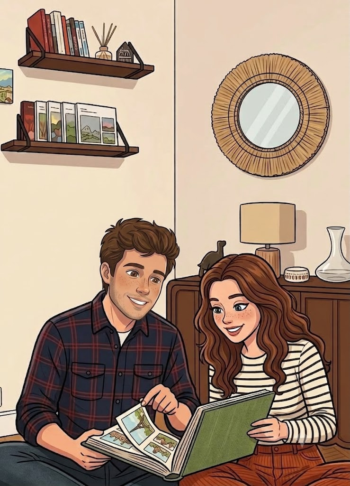
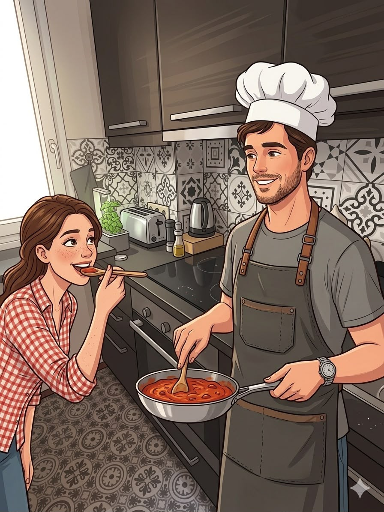
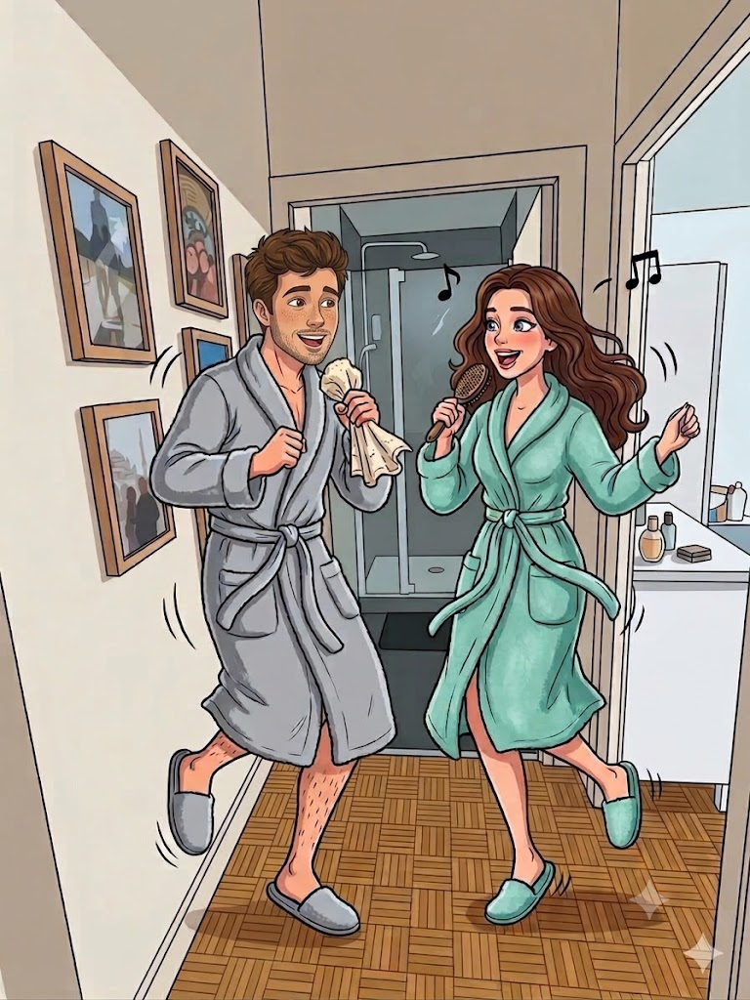
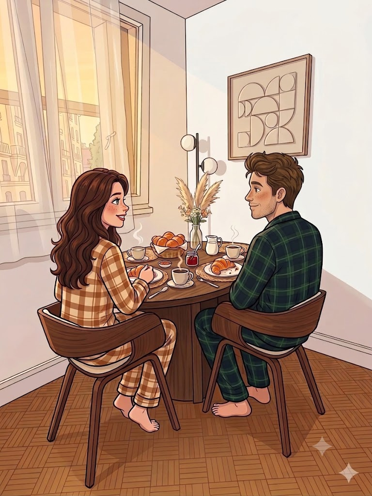
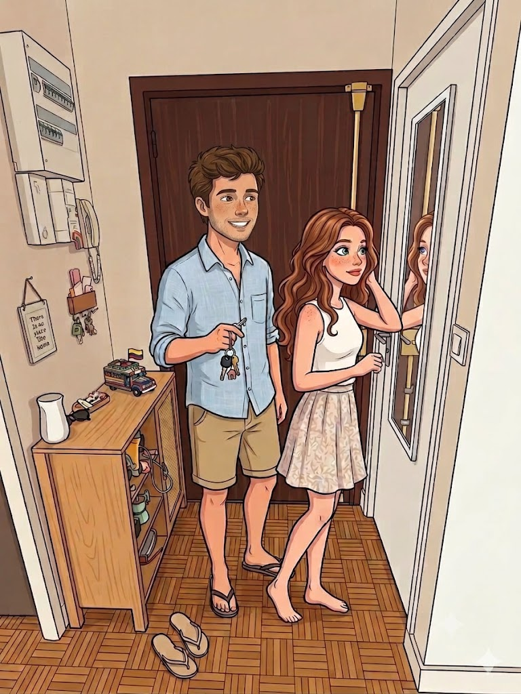
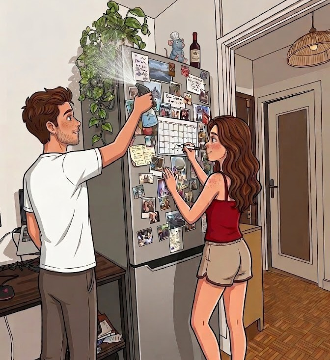

Eccoci sul nostro bellissimo divano gigante, il posto perfetto per riposare dopo mangiato,
chiacchierare all’infinito e riempirci di coccole quando torniamo dal lavoro. È anche il
cuore della casa quando accogliamo le persone a cui vogliamo bene, sempre nel massimo del comfort.

I nostri 42 m² nell’11° arrondissement, già pieni di amore e ricordi, dove ci piace
ballare con accappatoi e pantofole coordinate, ridere a crepapelle e collezionare
foto ricordo dei nostri viaggi. È il nostro piccolo rifugio nel cuore di Parigi,
sempre in movimento ma capace di fermare il tempo nei momenti più semplici, tra
una playlist messa su a caso, una luce soffusa e la sensazione di essere
esattamente dove dobbiamo essere.






E poi c’è la nostra bellissima cucina. Fa quasi ridere pensare che prima fosse tutta
arancione e decisamente bruttina, no? L’abbiamo completamente trasformata in una cucina
da sogno, dove ci piace cucinare, tenerla in ordine ed è diventata una delle nostre stanze
preferite. Jo è uno chef magnifico e io sono la sua prima fan e sous-chef: ogni occasione è
buona per mettersi ai fornelli e sperimentare. Siamo anche super attrezzati, il che rende
tutto ancora più divertente, diciamo che non ci manca davvero nulla per sentirci un po’ come
a casa di veri chef.

È il nostro piccolo mondo, dove le colazioni e i brunch sono diventati quasi
leggendari, al punto da non avere nulla da invidiare alle migliori caffetterie
di Parigi. Tra caffè lunghi, pane tostato, ricette improvvisate e tavola sempre
un po’ troppo piena, questi momenti sono diventati un vero rituale. È lì che
iniziano le giornate migliori, tra chiacchiere lente, musica in sottofondo e
l’idea che, in fondo, non serve altro per essere felici.

Ogni angolo è stato pensato con amore e costruito con l’impegno di entrambi,
creando quello che per noi è semplicemente il posto migliore del mondo. Adoriamo
la nostra casetta, che sentiamo davvero nostra, in ogni dettaglio e in ogni piccola
abitudine che abbiamo costruito insieme. Lui è il guardiano delle chiavi quando usciamo,
il test beta delle mie mille applicazioni e il custode delle piante, mentre io
riempio il calendario di tutti i nostri impegni e progetti. Un piccolo equilibrio
quotidiano che racconta perfettamente il nostro modo di vivere insieme❤️.